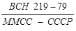
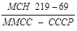

МИНИСТЕРСТВО МОНТАЖНЫХ И СПЕЦИАЛЬНЫХ
СТРОИТЕЛЬНЫХ РАБОТ СССР
УТВЕРЖДАЮ
Зам. министра монтажных и
специальных строительных
работ СССР
Л.Д. Солоденников
29 января 1979 г.
ИНСТРУКЦИЯ
ПО РАЗГЛИНИЗАЦИИ СКВАЖИН НА ВОДУ
ВИБРАЦИОННЫМ СПОСОБОМ
ВСН 219-79
ММСС СССР
Москва 1979
СОДЕРЖАНИЕ
Настоящая инструкция разработана Всесоюзным научно-исследовательским институтом гидромеханизации, санитарно-технических и специальных строительных работ (ВНИИГС) на основе результатов теоретических и экспериментальных исследовании вибрационного гидродинамического способа обработки скважин на воду при их разглинизации, предложенного ВНИИГС совместно с трестом Промбурвод, а также опыта применения этого способа специализированными управлениями треста Промбурвод.
Инструкция выпущена взамен «Временных указаний по вибрационному способу разглинизации водяных скважин» (МСН 219-69/Минмонтажспецстрой СССР) и предназначена для производственных организаций, ведущих бурение скважин на воду вращательным способом с применением глинистого раствора. Инструкция может быть использована также организациями, занимающимися ремонтом скважин на воду, снизивших производительность в период эксплуатации вследствие механической или химической кольматации фильтров и призабойных зон.
Вибрационный способ разглинизации скважин осуществляется с использованием разработанного ВНИИГС и трестом Промбурвод специализированного оборудования (поверхностных виброустановок ВУР-2, ВУР-3, погружной виброустановки ВУР-4, а также самоходных агрегатов АВО-1 и АВО-2) эффективность работы которого проверена трестом Промбурвод в различных гидрогеологических условиях.
Инструкция согласована с Главспецпромстроем Минмонтажспецстроя СССР и трестами Промбурвод, Востокбурвод и Союзшахтоосушение.
Составители: канд. техн. наук В.В. Верестов и М.Г. Цейтлин, Б.А. Цыганков
|
Минмонтажспецстрой СССР |
Ведомственные строительные нормы |
 |
|
Инструкция по разглинизации скважин на воду вибрационным способом |
Взамен  |
1.1. Инструкция распространяется на вибрационную гидродинамическую обработку скважин на воду, водоносные породы которых представлены в основном песками. Гидродинамическая обработка скважин на воду осуществляется с целью восстановления проницаемости фильтров и призабойных зон в случае их глинизации в процессе бурения или кольматации в период эксплуатации.
1.2. Вибрационный способ разглинизации (приложение I) следует применять на скважинах, пробуренных с использованием глинистого раствора, а также на скважинах, в водоносном слое которых имеются пропластки глин, способные вызвать глинизацию призабойной зоны в процессе бурения. Скважины, как правило, должны быть оборудованы фильтровыми колоннами диаметром не менее 114 мм с проволочными или сетчатыми фильтрующими оболочками, в том числе при наличии слоя гравийной засыпки.
1.3. Для вибрационной гидродинамической обработки скважины при ее разглинизации необходимы поверхностная или погружная виброустановка типа ВУР, рабочий орган, оборудование для эрлифтной откачки или насосной промывки. Монтажные, спуско-подъемные и другие сопутствующие операции должны выполняться с помощью специализированных самоходных агрегатов типа АВО или (в случае отсутствия последних) с применением буровых установок, используемых для проходки скважин (приложение 2).
|
Внесены Всесоюзным научно-исследовательским институтом гидромеханизации, санитарно-технических и специальных строительных работ (ВНИИГС) |
Утверждены
Минмонтажспецстроем СССР |
Срок введения 1 июля 1979 г. |
1.4. Инструкция предусматривает вибрационную гидродинамическую обработку скважин на воду как поверхностными, так и погружными виброустановками. В зависимости от типа применяемой виброустановки вибрационной гидродинамической обработке могут быть подвергнуты скважины глубиной до 800 м.
2.1. К работам по вибрационной разглинизации приступают после спуска в скважину фильтровой колонны и отвода буровой установки с устья скважины (в случае использования погружной виброустановки ВУР-4 последнюю операцию можно не выполнять).
Вибрационную обработку эксплуатируемых скважин проводят после частичного демонтажа водопроводной обвязки, подъема эксплуатационного насоса, а в случае необходимости - чистки ствола скважины желонкой. Все эти операции можно выполнять с помощью агрегата АВО-1 или АВО-2 (в зависимости от глубины скважины).
2.2. При установке агрегата АВО-1 или АВО-2 на скважине для проведения вибрационной разглинизации должен соблюдаться следующий порядок работ:
прицеп с виброустановкой ВУР-3 или ВУР-2 отсоединяют от агрегата на расстояния 0,5 м от устья скважины и устанавливают на заднюю и переднюю откидные опоры;
агрегат устанавливают на скважине со стороны, противоположной размещению виброустановки, таким образом, чтобы вертикальная ось рабочего каната совпадала с осью скважины.
Рис. 1. Конструкция монтажной мачты агрегата АВО-2:
1 - винтовой подъемник; 2 - стойка; 3 - фиксирующий палец; 4 - стрела; 5 - кронблок с кожухом; 6 - крюк с упором; 7 - направляющая трубка; 8 - барабан фиксирующего устройства; 9 - защелка; 10 - рукоятка; 11 - тросик управления фиксирующим устройством; 12 - проушина стрелы; 13 - проушина стойки
2.3. Перед подъемом монтажной мачты агрегата АВО-2* (рис. 1) опускают хомутики, крепящие мачту в транспортном положении. Затем винтовым подъемником 1 мачту переводят в вертикальное положение. Стрелу 4 в рабочее положение переводят подъемной лебедкой путем затягивания упора крюка 6 в гнездо кожуха кронблока 5 и последующего ее подъема. Фиксируют стрелу 4 относительно стойки 2 посредством пальца 3, перемещаемого в направляющей трубке 7 тросиком 11. Перемещают тросик 11 вращением барабана 8 за рукоятки 10. Барабан 8 фиксируют защелкой 9. При вращении барабана 8 против часовой стрелки до упора палец 3 заводят в проушину 12 стрелы и проушины 13 стойки 2 мачты.
*Операции подъема мачты агрегата АВО-1 аналогичны операциям, выполняемым при подъеме мачт буровых установок УРБ-2А и УРБ-3АМ.
Стрелу и стойку мачты фиксируют, не ослабляя натяжения троса грузоподъемной лебедки, что обеспечивает совмещение отверстий в проушинах 12 и 13.
После подъема стойки и стрелы мачту устанавливают на откидные винтовые домкраты, с помощью которых разгружают рессоры автомобиля и выводят мачту в строго вертикальное положение.
При демонтаже мачты первоначально вывинчивают и переводят в транспортное положение винтовые домкраты. Затем с помощью грузоподъемной лебедки упор крюка затягивают в гнездо кожуха кронблока и, натягивая трос подъемной лебедки, снимают нагрузку с фиксирующего пальца 3. После этого фиксирующий палец выводят из проушин стойки и стрелы, которую путем ослабления тормоза лебедки плавно опускают до вертикального положения. Сложенную мачту переводят в транспортное положение винтовым подъемником.
2.4. Рабочий орган в скважине и поверхностную виброустановку на ее устье монтируют в следующей последовательности (рис. 2):
в муфту эксплуатационной колонны ввинчивают сменный переходник 9;
в скважине в интервале фильтра монтируют рабочий орган 12 и спускают колонну 11 насосно-компрессорных труб;
в колонну при применении центрального эрлифта ставят смеситель, а при эрлифте по системе «рядом» к этой колонне через отвод присоединяют гибкий шланг 14;
колонну 11 насосно-компрессорных труб закрепляют над устьем скважины с помощью трубного хомута, который устанавливают на сменном переходнике 9;
в муфту колонны насосно-компрессорных труб 11 ввинчивают патрубок с фланцем 8;
виброустановку вывешивают по оси скважины и фланцы 8 вибратора и колонны насосно-компрессорных труб совмещают и скрепляют с помощью болтов;
вместе с колонной насосно-компрессорных труб виброустановку приподнимают и снимают трубный хомут;
виброустановку опускают на сменный переходник 3 и крепят к нему с помощью откидных болтов, смонтированных на подвижном кольце опорной рамы вибратора;
подсоединяют эрлифтную систему к компрессору;
подключают электродвигатель виброустановки к электрической цепи генератора агрегата.
2.5. Особенности монтажа в скважине погружной виброустановки ВУР-4 (рис. 3): рабочий орган опускают в скважину, после чего к нему привинчивают виброустановку и заполняют ее трубчатый резервуар водой;
рабочий орган и виброустановку спускают в зону фильтра на колонне бурильных труб вместе с электрическим кабелем;
спущенное в скважину оборудование крепят на ее устье посредством оголовка с крышкой, которую удерживают за проушину крюком грузоподъемного механизма;
перед креплением оголовка через сальниковое устройство крышки пропускают электрический кабель.
2.6. В зависимости от цели вибрационной гидродинамической обработки скважины поверхностными виброустановками (разглинизация вновь пробуренной скважины, восстановление производительности скважины при ремонте без применения химических реагентов, комбинированная виброхимическая декольматация фильтра и призабойной зоны) в стволе скважины может быть смонтирован рабочий орган обычного типа, со встречным движением дисков, с вибронагнетателем или вибронасосом (рис. 4).
2.7. Рабочий орган обычного типа следует применять при разглинизации вновь пробуренных скважин. Для повышения эффекта обработки при разглинизации скважин, водоносная порода которых представлена мелкозернистыми песками, можно использовать рабочий орган со встречным движением дисков. Вибронасосы применяют в комплексе с рабочим органом обычного типа или со встречным движением дисков при разглинизации вновь пробуренных скважин и их ремонте в случаях низкого динамического уровня и малого дебита, а также при наличии в откачиваемой воде значительного количества частиц песка. На колонне труб рабочего органа необходимо последовательно устанавливать несколько вибронасосов с интервалами 8 - 10 м.
Рис. 2. Схема монтажа поверхностных виброустановок и их рабочего органа на скважине:
1 - подвеска виброустановки; 2 - амортизирующая пружина; 3 - направляющий стержень; 4 - приводной электродвигатель; 5 - вибратор продольно-направленного действия; 6 - резиновая диафрагма-герметизатор устья скважины; 7 - патрубок для отвода воды при откачке скважины эрлифтом по системе «рядом» или для подачи сжатого воздуха при откачке эрлифтом по центральной системе; 8 - присоединительный фланец; 9 - сменный переходник; 10 - эксплуатационная колонна; 11 - колонна насосно-компрессорных труб; 12 - рабочий орган с дисками; 13 - патрубок для отвода воды при откачке скважины эрлифтом по центральной системе; 14 - гибкий шланг для подачи воздуха в скважину при ее откачке по системе «рядом»; 15 - конструкция резинометаллического диска для фильтров диаметром 168 и 219 мм; 16 - конструкция резинометаллического диска с дополнительными стальными полукольцами для фильтров диаметром 273 и 326 мм
При комбинированной виброхимической обработке скважин, снизивших дебит в результате химического кольматажа, вибронагнетатель используют в комплексе с рабочим органом обычного типа или со встречным движением дисков. Вибронагнетатель монтируют на колонне насосно-компрессорных труб над рабочим органом с дисками. Перед спуском в скважину к штуцеру резиновой оболочки пакера вибронагнетателя необходимо присоединить резиновый шланг компрессора.
Сначала в последовательности, указанной в пп. 2.4 и 2.5, монтируют в скважине вибрационное оборудование и собирают эрлифтную систему. Затем приступают к откачке скважины эрлифтом и периодически на 3 - 5 мин включают в работу виброустановку. При возобновлении откачки вслед за окончанием вибрационной гидродинамической обработки следят за содержанием в воде частиц песка и глины.
После того, как произойдет осветление воды, виброустановку вновь запускают в работу. Если при последующей откачке количество частиц глины в воде вновь увеличивается, то откачку продолжают до осветления воды, а затем еще раз включают виброустановку. Вибрационную гидродинамическую обработку и откачку производят до тех пор, пока после очередного включения виброустановки в воде не будет наблюдаться заметного увеличения количества глинистых частиц. В процессе откачки после каждого включения вибратора измеряют дебит скважины, результаты измерений фиксируют в журнале (приложение III), а динамический уровень воды определяют по известной зависимости, исходя из показаний манометра компрессора эрлифтной системы.
Рис. 3. Схема устройства погружной виброустановки ВУР-4 и ее размещения в скважине:
1 - электрический кабель; 2 - оголовок; 3 - эксплуатационная колонна; 4 - колонна бурильных труб; 5 - трубчатый резервуар для воды; 6 - электродвигатель; 7 - вибратор виброустановки ВУР-4; 8 - смеситель эрлифта; 9, 10 - диски рабочего органа, связанные соответственно с наружной и внутренней трубой; 11 - зубчатая муфта; 12 - блок коническо-цилиндрических зубчатых колес; 13 - эксцентриковый вал; 14, 15 - шатуны; 16 - пружина; 17, 18 - соответственно наружная и внутренняя штанги
При использовании вибронасосов гидродинамическую обработку и откачку скважины выполняют одновременно, виброустановку включают в работу на 20 - 30 мин с перерывами на 10 -15 мин.
Рис. 4. Схема монтажа в скважине вибрационных рабочих органов различных типов (для поверхностных виброустановок):
а - с жестко закрепленными дисками; б - со встречным движением дисков; в - с вибронагнетателем; г - с вибронасосом; 1 - фильтровая колонна; 2 - труба; 3 - диск; 4 - смеситель эрлифта; 5, 7 - наружная и внутренняя трубы; 6 - узел пружинной подвески; 8, 9 - диски, закрепленные соответственно на наружной и внутренней трубе; 10 - клапанный узел вибронагнетателя; 11 - шланг подачи сжатого воздуха в резиновую оболочку; 12 - пакер; 13 - отверстия для выхода реагента; 14 - клапанный узел вибронасоса; 15 - приемное отверстие вибронасоса
2.9. Комбинированную виброхимическую обработку скважин, фильтр и призабойная зона которых закольматированы осадками химического происхождения, осуществляют с использованием вибронагнетателя в таком порядке.
Сначала проводят 2-3 цикла виброобработки по технологии, изложенной в п. 2.8, до относительного осветления откачиваемой из скважин воды. Затем через патрубок, обычно используемый для отвода поступающей из скважины воды, в ствол скважины необходимо залить реагент. Химический состав реагента и его количество определяют в зависимости от физико-химических свойств и структуры кольматанта в соответствии с данными ВНИИ ВОДГЕО Госстроя СССР*.
* «Рекомендации по восстановлению производительности скважин реагентными методами», М., изд. ВНИИ ВОДГЕО, 1975.
Проход реагента к фильтру продолжается 15 мин, затем резиновую оболочку пакера разжимают и включают на 10 мин. вибратор. Одновременно с реагентной обработкой в процессе вибрирования производят гидродинамическую обработку фильтра и призабойной зоны. При вибрировании рабочего органа вибронагнетателем в импульсном режиме находящуюся в скважине жидкость перекачивают в направлении сверху вниз, чем создают в обрабатываемых химическим реагентом фильтре и призабойной зоне избыточное давление 3-4 кгс/см2.
После окончания первого цикла вибрирования давление в пакере сбрасывают и реагент, выдавленный за контур фильтра, возвращают в ствол скважины. Через 20 мин фильтровую зону вновь герметизируют и возобновляют вибрирование на 10 мин. Эти операции в указанной последовательности выполняют 3-5 раз. Затем заливают вторую порцию реагента и весь цикл повторяют. После виброхимической обработки проводят эрлифтную откачку скважины до полного выхода твердых и газообразных продуктов реакции.
2.10. Погружная виброустановка ВУР-4 может быть применена с рабочим органом обычного типа или со встречным (противофазным) движением дисков (см. рис. 4, а и б).
Погружная виброустановка ВУР-4 может работать в скважинах по одной из трех технологических схем: схему на рис. 5, а следует использовать при низком динамическом уровне воды в скважине и малом зазоре между корпусом виброустановки и эксплуатационной колонной:
схему на рис. 5, б - в случаях, когда оптимальная глубина загрузки смесителя эрлифта находится выше расположения виброустановки ВУР-4, а кроме того, гидрогеологические условия и конструкция скважины позволяют выносить воду и шлам между эксплуатационной и воздушной колоннами труб;
виброобработку скважины в сочетании с ее откачкой погружным электронасосом (см. рис. 5, в) целесообразно использовать в случаях, когда доставить компрессор на скважину невозможно, а также при значительном диаметре эксплуатационных колонн.
3.1. Обслуживает агрегаты АВО-1, АВО-2 и виброустановки звено из двух монтажников - старшего смены и шофера, а при использовании виброустановки ВУР-4 с буровым агрегатом - звено из двух бурильщиков - старшего смены и бурильщика.
3.2. Обязанности старшего смены при вибрационной обработке скважин: управление механизмами агрегата в процессе его монтажа и в ходе выполнения операций по виброобработке; наблюдение за техническим состоянием оборудования и контрольно-измерительными приборами; устранение замеченных неисправностей; контроль за дебитом и динамическим уровнем воды в обрабатываемой скважине, изменением содержания песка и шлама в откачиваемой воде; определение продолжительности и числа включений виброустановки в работу в зависимости от количества и состояния откачиваемой воды; ведение журнала учета работ (см. приложение III).
3.3. Обязанности монтажника (бурильщика): ежесменное обслуживание агрегата и виброустановки; проверка состояния рабочих органов и их резьбовых поверхностей перед спуском в скважину; участие в монтаже оборудования на скважине; наблюдение в процессе обработки скважины за работой виброустановки, электрического генератора, компрессора и состоянием воздушной обвязки эрлифта.
Рис. 5. Технологические схемы работы погружной виброустановки ВУР-4 в скважинах:
а - при низком динамическом уровне и использовании для откачки эрлифтного смесителя в корпусе виброустановки; б - при высоком динамическом уровне и возможности откачки скважины эрлифтом с отдельным смесителем; в - в случае применения для откачки погружного электронасоса; 1 - колонна бурильных труб; 2 - виброустановка; 3 - смеситель эрлифта в корпусе виброустановки; 4 - вибрационный рабочий орган; 5 - отдельный смеситель эрлифта, установленный в колонне бурильных труб; 6 - смонтированный в полом каркасе погружной электронасос
3.4. Для поддержания агрегата и виброустановки в рабочем состоянии звено должно выполнять два вида профилактического обслуживания: ежесменное обслуживание и технический уход.
При ежесменном обслуживании звено обязано произвести:
наружный осмотр, чистку и смазку оборудования, включая доливку масла до требуемого уровня в редукторы, коробки передач агрегата и виброустановок ВУР-2, ВУР-3 и ВУР-4;
проверку: состояния контрольно-измерительных приборов, карданных и цепных передач, шпоночных, фланцевых и прочих соединений; затяжки резьбовых соединений; надежности действия тормозов и всех систем управления механизмами агрегата и виброустановкой; состояние рабочего троса, шарнирных соединений и фиксирующего устройства монтажной мачты (до ее перевода в рабочее или транспортное положение);
обслуживание базовых автомобилей агрегатов АВО-1 и АВО-2 согласно инструкциям по эксплуатации автомобилей соответственно ЗИЛ-131 и ГАЗ-66.
При техническом уходе:
повторяют работы, входящие в обязанности ежесменного обслуживания;
выполняют проверку: состояния подшипников и зубчатых колес в узлах агрегата и виброустановки; мачты и ее крепления к платформе агрегата; электрического генератора, компрессора и надежности их крепления к платформе; контактов, приборов пульта электрического управления, изоляции электрооборудования;
регулировку, а в случае необходимости замену тормозов подъемной лебедки, осмотр и замену рабочего троса;
продувку электрогенератора сухим сжатым воздухом;
осмотр и смазку направляющих стержней виброустановок ВУР-2 и ВУР-3;
замену смазки в редукторах и коробках передач;
окраску (при необходимости) отдельных участков наружных поверхностей.
Технический уход за агрегатами выполняют через каждые 45 суток работы, независимо от их технического состояния, технический уход за виброустановками - через каждые 20 машинного времени их работы.
3.5. Планово-предупредительные ремонты агрегатов и виброустановок следует производить в ремонтно-механических мастерских по графику, установленному службой главного механика производственной организации. Все виды ремонта - малый, средний и капитальный - не реже чем через соответственно: 3; 12 и 24 мес.
3.6. При работе виброустановки и механизмов агрегата звено должно постоянно контролировать показания приборов пульта электрического управления, приборов базового двигателе компрессора.
Работающие агрегаты и виброустановки оставлять без надзора запрещается.
Частота и напряжение в электрической сети при работе виброустановки должны быть в пределах соответственно 45-55 Гц и 350-420 В. При нагреве электродвигателя поверхностной виброустановки свыше 80 °С или внезапном изменении режима ее работы виброустановку следует остановить и устранить неисправность.
При работе погружной виброустановки ВУР-4 сила тока в статорной цепи электродвигателя не должна превышать 10 А.
Перед каждым спуском в скважину виброустановки ВУР-4 ее трубчатый резервуар необходимо заполнять чистой водой, которую следует сливать после подъема виброустановки из скважины. Запускать виброустановку ВУР-4 в работу при отсутствии воды в резервуаре даже кратковременно запрещается, так как это может привести к выходу из строя приводного электродвигателя. При отрицательной температуре окружающего воздуха заливаемая в резервуар вода должна иметь температуру не ниже 30 °С.
При работе компрессора КТ-7 необходимо следить по манометру за давлением масла в системе его смазки. Предохранительные воздушные клапаны компрессора должны быть отрегулированы на давление 9,5 кгс/см2 и опломбированы. Регулировка клапанов на большее давление не допускается.
При первом запуске, и после длительных остановок (более 1 мес.) электрический генератор агрегата должен проработать в режиме холостого хода 2 - 3 ч перед подключением его к нагрузке.
На агрегатах АВО-1 и АВО-2 одновременно включать в работу электрогенератор и компрессор не следует, так как это может вызвать поломку трансмиссии машины.
Переводить монтажную мачту агрегатов в рабочее и транспортное положения необходимо плавно, без рывков. При эксплуатации мачта должна быть установлена на домкратах.
При работе грузоподъемной лебедки необходимо своевременно регулировать тормоза, не допускать попадания масла на тормозные накладки и барабаны. Работать с лебедкой при неисправном фиксаторе тормозного рычага запрещается.
Спуск вибрационного рабочего органа в фильтровую зону скважины следует производить: для поверхностных виброустановок - на насосно-компрессорных трубах диаметром 73 мм, для погружной виброустановки ВУР-4 - на бурильных трубах диаметром 73 и 89 мм.
Масса вибрационного рабочего органа не должна превышать указанной в технической характеристике виброустановок во избежание их перегрузок и возможного обрыва рабочего органа в скважине при его колебаниях.
Спускать рабочий орган на трубах, имеющих диаметр меньше указанного, а также на трубах другого назначения не следует. При выполнении операций по сборке рабочего органа и колонны насосно-компрессорных или бурильных труб особое внимание необходимо уделять качеству затяжки резьбовых соединений.
3.7. При эксплуатации агрегатов АВО-1 и АВО-2, виброустановок ВУР-2, ВУР-3 и ВУР-4 следует соблюдать правила техники безопасности, изложенные в СНиП III А-II-70 «Техника безопасности в строительстве», «Правилах безопасности при геологоразведочных работах» и «Инструкции по соблюдению мер пожарной безопасности при производстве геологических работ».
3.8. К управлению агрегатами и виброустановками и их техническому обслуживанию можно допускать только лиц, имеющих на это право, подтвержденное соответствующим документом.
3.9. При перемещении агрегатов АВО-1 и АВО-2, их монтаже на скважине и производстве работ запрещается:
передвигать агрегаты с поднятой или не установленной на опоры мачтой;
перевозить на платформе агрегата грузы;
находиться на платформе агрегата или в кабине во время подъема и спуска мачты;
производить спускоподъемные операции без поддомкрачивания опор мачты;
выполнять работы со снятыми или неисправными ограждениями цепных передач агрегатов и виброустановок ВУР-2 и ВУР-3;
ремонтировать или смазывать механизмы во время их работы.
При работе вблизи линий электропередач расстояние от самоходных агрегатов до охранной зоны должно быть не меньше высоты мачты. Охранная зона для линий напряжением до 20, 25, 110 и 220 кВ составляет соответственно 10, 15, 20 и 25 м.
3.10. При работе на скважине агрегаты АВО-1 и АВО-2 и виброустановки ВУР-2 и ВУР-3 должны быть заземлены. Электрическое сопротивление заземляющего провода между машиной и местом его присоединения к заземлителю не должно превышать 1 Ом. В качестве заземлителя необходимо использовать обсадную колонну скважины, на которой ведут работы. К заземлителю следует приварить отрезок стальной полосы с болтовым соединением для подключения заземляющего провода. Общее переходное сопротивление заземления не должно превышать 10 Ом.
3.11. При производстве монтажных работ агрегатами АВО-1 и АВО-2 применять канат для спускоподъемных операций запрещается, если:
одна прядь каната оборвана;
на длине шага свивки каната диаметром до 20 мм число оборванных проволок составляет более 5 %, а каната диаметром свыше 20 мм - более 10 %;
канат вытянут, изношен или сплюснут и его наименьший диаметр составляет 90 % и меньше первоначального;
одна из прядей вдавлена вследствие разрыва сердечника.
3.12. При эксплуатации виброустановок ВУР-2, ВУР-3 и ВУР-4 необходимо выполнять следующие правила:
спуск виброустановки ВУР-4 в скважину с электрическим кабелем, находящимся под напряжением, запрещается;
прочность соединений вибратора следует проверять перед его пуском и через каждые 30 мин работы (для виброустановки ВУР-4 перед каждым спуском в скважину); полный контроль состояния всех узлов и соединений вибратора производить через каждые 20 ч его работы;
резьбовые соединения деталей вибратора должны быть затянуты контргайками или зашплинтованы;
кабель, идущий к электродвигателю вибратора, во избежание повреждения не должен соприкасаться с вибрирующими частями.
Вибрационный способ обработки скважин на воду* заключается в том, что одновременно с откачкой или промывкой скважины на фильтр и призабойную зону водоносного пласта воздействует гидродинамическое давление, возбуждаемое в столбе воды вибрирующим вдоль продольной оси скважины рабочим органом - насосно-компрессорной трубой с закрепленными на ней дисками (рис. 6). Комбинированное действие знакопеременного гидродинамического давления и потока воды обеспечивает эффективное разрушение глинистой корки на стенках скважины и фильтра и удаление продуктов кольматации из призабойной зоны водоносного пласта. Вибрационный способ разглинизации технологичен, позволяет регулировать продолжительность и интенсивность динамической обработки скважин, совмещать динамическое и химическое воздействие на кольматант, обеспечивает с помощью вибрирующего рабочего органа нагнетание реагента за контур фильтра и его циркуляцию в зоне обработки.
* Вибрационный способ обработки скважин на воду и необходимое оборудование защищены авторскими свидетельствами на изобретения:
№ 262042, О И П О Т З, 1970 № 6;
№ 286619, О И П О Т З, 1970 № 34;
№ 366263, О И П О Т З, 1973 №7;
№ 398736, О И П О Т З, 1973 № 38;
№ 472188, О И П О Т З, 1975 № 20;
№ 520434, О И П О Т З, 1976 № 25.
Интенсивность разрушения глинистой корки или других кольматирующих соединений на стенках скважины и фильтра определяется возбуждаемым в воде гидродинамическим давлением. Амплитуда импульсов этого давления зависит от амплитуды и частоты колебаний рабочего органа, радиального зазора между диском и стенками фильтра, шага расположения дисков и их толщины, а также от гидрогеологических условий, определяющих степень кольматации призабойной зоны скважины и фильтра. Оптимальная амплитуда гидродинамического давления, определяющая эффективное протекание процесса разрушения осадков, составляет 2-3 кгс/см2 при частоте импульсов не менее 500 кол./мин.
Параметры виброустановок типа ВУР, рабочие органы которых в зависимости от их массы совершают колебания с амплитудой 5 - 12 мм при частоте 700 - 800 кол./мин, обеспечивают возбуждение указанного давления в скважинах глубиной до 800 м с диаметром фильтровых труб не менее 114 мм.
Рис. 6. Схема вибрационной гидродинамической обработки скважин на воду при их разглинизации:
1 - вибратор продольно-направленного действия; 2 - амортизирующая пружина; 3 - опорная рама; 4 - обсадная колонна; 5 - эксплуатационная колонна; 6 - колонна насосно-компрессорных труб, скрепленная с вибратором; 7 - рабочий орган с дисками; 8 - водоносная порода; 9 - фильтровая колонна
Поверхностные установки типа ВУР-2 и ВУР-3* (табл. 1, рис. 7) состоят из вибратора дебалансного типа и опорной рамы, которые связаны между собой направляющими стержнями и амортизирующими пружинами. Привод вибратора осуществляется цепной передачей от электродвигателя, установленного на опорной раме (ВУР-3) или на верхней крышке корпуса вибратора (ВУР-2). Опорная рама виброустановок снабжена отводом для воды и резиновой диафрагмой, позволяющей герметизировать устье скважины. Опорную раму соединяют с обсадной, эксплуатационной или фильтровой колонной скважины сменными переходниками, которыми укомплектованы виброустановки. Каждая виброустановка имеет пять переходников для труб диаметром 219, 273, 326, 377 и 426 мм.
*Устройство виброустановок ВУР-2 и ВУР-3 идентично.
Вибратор виброустановок ВУР-2 и ВУР-3 (рис. 8) состоит из сварного корпуса, в котором на подшипниковых опорах смонтированы два вала. В центральной части корпуса, имеющей масляную ванну, размещены синхронизирующие шестерни, диски которых выполнены в виде дебалансов. На консольные участки валов установлены пластинчатые дебалансы. Один из валов имеет удлиненную консоль, на которой закреплена приводная звездочка цепной передачи. С наружной стороны дебалансы и цепная передача закрыты кожухами.
Рис. 7. Общий вид виброустановки ВУР-3:
1 - вибратор продольно-направленного действия; 2 - амортизирующая пружина; 3 - верхняя рама; 4 - направляющий стержень; 5 - цепная передача; 6 - приводной электродвигатель; 7 - кожух цепной передачи; 8 - опорная рама; 9 - присоединительный фланец
Таблица 1
Техническая характеристика виброустановок для вибрационной гидродинамической обработки скважин на воду
|
Единица измерения |
Марка виброустановки |
|||
|
ВУР-2 |
ВУР-3 |
ВУР-4 |
||
|
1 |
2 |
3 |
4 |
5 |
|
Тип виброустановки |
Поверхностная |
Погружная |
||
|
Предельная глубина обрабатываемой скважины |
м |
120 |
250 |
800 |
|
Минимальный диаметр колонны скважины: |
мм |
|||
|
эксплуатационной |
168 |
168 |
219 |
|
|
фильтровой |
114 |
114 |
114 |
|
|
Максимальная масса рабочего органа |
кг |
1000 |
2000 |
400 |
|
Амплитуда колебаний рабочего органа при его максимальной массе |
мм |
6 |
6 |
7 |
|
Частота колебаний рабочего органа |
кол./мин |
700 |
700 |
800 |
|
Мощность приводного электродвигателя |
кВт |
7,5 |
13 |
5,5 |
|
Масса виброустановки (без рабочего органа) |
кг |
800 |
1300 |
240 |
|
Габариты в плане |
мм |
780х510 |
1400х680 |
Диаметр 188 |
|
Высота (без рабочего органа) |
мм |
1300 |
1200 |
3260 |
|
Агрегат, с которым может работать виброустановка |
Тип |
АВО-2 |
АВО-1 |
АВО-1, АВО-2 или буровая установка |
Погружная виброустановка ВУР-4 (см. табл. 1, рис. 3) состоит из вибратора, приводного электродвигателя, рабочего органа, колонны бурильных труб и оголовка. Вибратор кинематического типа смонтирован в герметичном корпусе и имеет привод от водозаполненного электродвигателя, выполненного на базе электродвигателя АПД 136/2 от погружного насоса ЭПН-6. Над электродвигателем установлен трубчатый резервуар, связанный клапаном с корпусом электродвигателя. Перед спуском виброустановки в скважину резервуар необходимо заполнять чистой водой, служащей для охлаждения электродвигателя*.
*Внутренние полости электродвигателя, резервуара и корпус вибровозбудителя герметичны относительно окружающей среды. Корпус не связан с окружающей средой и полостями электродвигателя и резервуара.
Рис. 8. Конструкция вибратора виброустановки ВУР-3:
1 - корпус; 2 - подшипниковая опора; 3 - синхронизирующая шестерня; 4 - дебаланс; 5 - вал; 6 - контрольная пробка уровня масла; 7 - приводная звездочка; 8 - стопорная гайка; 9 - крышка
Возбудитель колебаний имеет присоединительную зубчатую муфту, блок коническо-цилиндрических зубчатых колес эксцентриковый вал, соединенный шатунами с движущимися в противофазе коаксиально расположенными штангами, которые, в свою очередь, соединяются с наружной и внутренней трубами рабочего органа.
Пружина, установленная между корпусом виброустановки и наружной штангой, обеспечивает резонансный режим колебаний, при котором силы инерции колеблющихся масс уравновешиваются упругой силой, что позволяет снизить динамические нагрузки на эксцентриковый вал и привод.
Корпуса возбудителя колебаний, электродвигателя и резервуара снабжены продольным внутренним каналом, по которому воздух, необходимый для работы эрлифта, можно подавать к смесителю, расположенному в нижней части корпуса виброустановки.
Погружная виброустановка в отличие от виброустановок поверхностного типа подвергает вибрированию не всю колонну труб, а лишь рабочий орган с дисками, что обусловливает ее преимущественное использование на скважинах глубиной более 200-250 м, на которых виброустановки поверхностного типа не могут быть применены.
В комплект виброустановки ВУР-4 входят: пульт электрического управления, оголовок для герметизации устья скважины с набором сменных переходных ниппелей, позволяющих закреплять машину на эксплуатационных или фильтровых колоннах диаметром 219, 273 и 377 мм, а в случае агрегатирования виброустановки ВУР-4 с погружным электронасосом также полый стальной каркас, предназначенный для размещения погружного электронасоса.
Наличие погружного электрооборудования (двигатель, кабель) исключает возможность применения виброустановки. ВУР-4 при комбинированных виброкислотных обработках скважин.
Рабочий орган виброустановок представляет собой насосно-компрессорную трубу диаметром 60 или 73 мм, в нижней части которой на длине, равной высоте фильтра, с шагом 0,5 м прикрепляют диски (рис. 9, а) толщиной 10 мм, наружный диаметр которых немного меньше внутреннего диаметра фильтра.
Диски выполняют из стальных колец, на которых закрепляют сменные (в зависимости от диаметра фильтровой колонны скважины) резиновые полукольца (см. рис. 9, б). Резинометаллическая конструкция дисков позволяет легко монтировать рабочий орган в скважине и дает возможность увеличивать эффект гидродинамического воздействия за счет малого (1-2 мм) радиального зазора между каркасом фильтра скважины и наружным диаметром дисков.
Рис. 9. Конструктивные схемы вибрационных рабочих органов:
а - расположение рабочего органа в фильтре скважины; б - конструкция диска рабочего органа; в - клапанный узел-вибронасос, обеспечивающий вибрационный подъем жидкости из скважины; г - клапанный узел-вибронагнетатель, обеспечивающий принудительное вибрационное нагнетание химического реагента за контур фильтра скважины; 1 - водоносная порода; 2 - фильтр скважины; 3 - труба рабочего органа; 4 - диск; 5 - сменное (в зависимости от диаметра фильтра) резиновое полукольцо; 6 - стальное приваренное к трубе кольцо; 7, 10, 11, 16 - присоединительные ниппели и муфты; 8, 14 - клапаны; 9 , 12 - пружины; 13 - патрубок для подвода сжатого воздуха в пакер; 15 - резиновая оболочка пакера
Вибрационный рабочий орган со стальными дисками можно использовать в фильтрах диаметром 114 и 127 мм, рабочий орган с резинометаллическими дисками предназначен для работы в фильтрах диаметром 168, 219, 273 и 326 мм.
В ряде случаев (разглинизация мелкозернистых водоносных песков, устранение химической кольматации фильтров) можно применять рабочий орган (см. рис. 3 и 4), соседние диски которого совершают по отношению друг к другу встречные, а для погружной виброустановки - противофазные колебательные движения, обеспечивающие возбуждение в столбе воды импульсов гидродинамического давления встречного направления. Эти импульсы способствуют повышению эффекта очистки фильтра и призабойной зоны скважины.
При обработке скважин, фильтровая колонна в которых установлена впотай, нижний торец рабочего органа необходимо снабжать конусообразным направляющим устройством, облегчающим вход дисков в фильтр.
В случае необходимости в верхней части рабочего органа (над фильтром) могут быть смонтированы специальные клапанные узлы. Один из них - вибронасос (см. рис. 9, в) обеспечивает откачку воды из скважины в период ее вибрационной гидродинамической обработки без использования традиционных водоподъемных средств.
Вибронасос выполнен в виде отдельного узла, состоящего из корпуса и подпружиненного клапана, который обеспечивает пропуск жидкости лишь в направлении снизу вверх. Вибронасос снабжен муфтой и ниппелем для соединения с насосно-компрессорными трубами диаметром 73 мм. Вибронасосы можно применять в скважинах диаметром не менее 168 мм. В зависимости от глубины скважины и динамического уровня воды на колонне насосно-компрессорных труб рабочего органа последовательно устанавливают несколько вибронасосов с интервалами 8 - 10 м. При этом нижний вибронасос закачивает воду из скважины, а остальные перекачивают жидкость на поверхность по внутренней полости рабочего органа, снабженного в верхней части отводом. Производительность вибронасосов, работающих с виброустановками ВУР-2 или ВУР-3, достигает 6 м3/ч.
Вибронагнетатель (см. рис. 9, г) при ремонте скважин позволяет принудительно нагнетать химический реагент через фильтр в призабойную зону в период ее виброхимической обработки и достигать за счет этого значительного эффекта восстановления проницаемости фильтра и призабойной зоны.
Вибронагнетатель состоит из клапанного нагнетательного узла и сменного узла герметизация - пакера - для работы в скважинах с эксплуатационными колоннами диаметром 168, 219 и 273 мм.
Над вибронагнетателем монтируют отрезок трубы с прорезями для пропуска реагента в фильтровую зону скважины. Пакер представляет собой металлический каркас, на котором установлен уплотнитель из многослойной вулканизированной резины. Пакер снабжен штуцером для впуска сжатого воздуха в полость, образованную наружной поверхностью каркаса и внутренней поверхностью резиновой оболочки, и обеспечивает герметизацию фильтра при создании давления в его полости, превышающего гидростатическое в зоне установки на 2 - 3 кгс/см2. Сжатый воздух подают к пакеру по отдельному шлангу, опускаемому в скважину параллельно с колонной. Воздухосборник компрессора при этом должен быть оборудован двумя кранами и манометром для контроля и поддержания в пакере необходимого рабочего давления.
При разглинизации вновь пробуренных скважин на воду, а также при ремонте эксплуатируемых скважин агрегаты АВО-1 и АВО-2 (табл. 2) могут выполнять:
вибрационную гидродинамическую обработку призабойной зоны и фильтра в сочетании с эрлифтной откачкой или другими методами водоподъема, в том числе при реагентных обработках скважины в случае ее кольматации осадками химического происхождения;
спуско-подъемные операции при монтаже (демонтаже) в стволе скважины рабочих органов, насосно-компрессорных труб и водоподъемного оборудования;
Рис. 10. Общий вид самоходного агрегата АВО-2:
1 - воздухосборник; 2 - поршневой компрессор КГ-7; 3 - автомобиль ГАЗ-66; 4 - опора для мачты в транспортном положении; 5 - монтажная мачта; 6 - электрический генератор ЕСС-81-6М; 7 - винтовой подъемник мачты; 8 - грузоподъемная лебедка; 9 - запасное колесо; 10 - прицеп; 11 - виброустановка ВУР-2
запуск в работу погружных электронасосов для их опробования после монтажа в скважине.
Для этого самоходные агрегаты АВО-1 и АВО-2 (рис. 10) снабжены грузоподъемной лебедкой, монтажной мачтой, электрическим генератором с пультом управления и поршневым компрессором с воздухосборником. Все механизмы смонтированы на шасси автомобиля и имеют привод от его двигателя. Вибрационные установки ВУР-2 или ВУР-3 транспортируют на одноосном прицепе, их приводит в действие электрический генератор агрегата.
Агрегаты АВО-1 и АВО-2 снабжены монтажными мачтами разной конструкции. На АВО-1 установлена обычная жесткая решетчатая мачта, обеспечивающая незначительный вылет грузового каната, что позволяет вести работы на вновь пробуренных скважинах, но исключает ее эффективное использование при ремонте скважин, над которыми ранее построены защитное сооружение и водопроводная обвязка. Подъем и опускание мачты агрегата АВО-1 осуществляют гидроцилиндром, шток которого приводится в движение от установленного на платформе масляного насоса.
Таблица 2
Техническая характеристика самоходных агрегатов для выполнения комплекса операций при вибрационной гидродинамической обработке скважин на воду
|
Единица измерения |
Тип агрегата |
||
|
АВО-1 |
АВО-2 |
||
|
Предельная глубина обслуживаемых скважин |
м |
250 |
120 |
|
Транспортная база-автомобиль |
Марка |
ЗИЛ-131 |
ГАЗ-65 |
|
Мощность базового двигателя |
л.с. |
150 |
115 |
|
Высота мачты от поверхности земли до оси крон-блока |
мм |
11000 |
9000 |
|
Расстояние от оси мачты до отвеса рабочего каната |
мм |
530 |
1500 |
|
Рабочая грузоподъемность мачты |
кг |
2500 |
2000 |
|
Мощность электрического генератора |
кВт |
30 |
20 |
|
Производительность компрессора |
м3/мин |
5,3 |
5,3 |
|
Наибольшее рабочее давление, развиваемое компрессором |
кгс/см2 |
9 |
9 |
|
Виброустановка |
Марка |
ВУР-3, ВУР-4 |
ВУР-2, ВУР-4 |
|
Максимальная масса груза, перевозимого в прицепе |
кг |
1000 |
1000 |
|
Общая транспортная масса агрегата с прицепом и виброустановкой |
кг |
12500 |
7000 |
Монтажная мачта агрегата АВО-2 представляет собой складную трубчатую конструкцию нового типа (см. рис. 1) и состоит из шарнирно скрепленных между собой стойки и стрелы.
Мачту поднимают в вертикальное положение винтовым подъемником, имеющим электрический привод. На рабочем тросе закреплен крюк с упором, а на кожухе кронблока - гнездо, в которое входит упор при переводе стрелы в рабочее или транспортное положение. Мачта снабжена устройством для фиксирования стрелы относительно стойки в рабочем положении. Это устройство включает палец, смонтированный в направляющей трубке и жестко связанный с тросом, который имеет две параллельные ветви, закрепленные на барабане в двух диаметрально противоположных точках. На барабане смонтированы рукоятки и защелка для его фиксации.
Монтажная мачта агрегата АВО-2 при простоте ее перевода из транспортного и рабочего положений благодаря вылету стрелы равному 1,5 м, позволяет проводить монтажные и ремонтные работы на скважинах, где невозможно установить агрегат в непосредственной близости от устья.
Агрегат АВО-1 имеет двухбарабанную грузоподъемную лебедку. Наличие двух барабанов значительно сокращает время на спуск в скважину насосно-компрессорных труб. Грузоподъемная лебедка агрегата АВО-2 однобарабанная, со встроенным планетарным редуктором.
Оба агрегата снабжены однотипными компрессорами КТ-7, представляющими собой двухступенчатую трехцилиндровую поршневую систему с воздушным охлаждением.
Агрегаты АВО-1 и АВО-2 имеют электрические генераторы марок соответственно ЕСС-83-6М и ЕСС-81-6М. Электрические пульты управления агрегатов могут быть включены в силовые цепи напряжением 380 В и цепи управления напряжением 12 В.
Пульты управления всеми механизмами агрегатов сосредоточены на их платформе.
|
№ Скважины |
Дата |
Описание работ (виброразглинизация, восстановление дебита при ремонте, комбинированная виброхимическая обработка) и типа используемого оборудования |
Описание водоносной породы, вида фильтра (сетчатый, проволочный с гравийной обсыпкой и т.д.) |
Интервал установки фильтра, м |
Диаметр фильтра, мм |
Вид вибрационного рабочего органа и интервал его установки в скважине, м |
Удельный дебет скважины м3/ч м |
Дебит скважины м3/ч |
Продолжительность работы вибратора на скважине, мин |
Вид откачки (эрлифт, погружной насос, виброподъем), ее продолжительность, ч |
Оценка результатов обработки; неисправности, возникшие при работе оборудования |
||||||
|
Окончания бурения |
Сдачи в эксплуатацию |
Обработки |
|||||||||||||||
|
от |
до |
До обработки |
После обработки |
До обработки |
После обработки |
||||||||||||
|
1 |
2 |
3 |
4 |
5 |
6 |
7 |
8 |
9 |
10 |
11 |
12 |
13 |
14 |
15 |
16 |
17 |
|